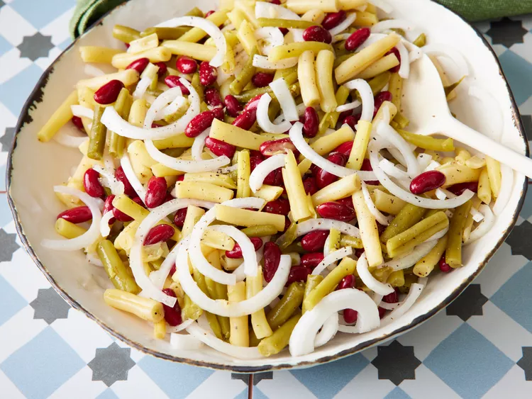

Three Bean Salad

Description
Three-bean salad is a classic side dish featuring a medley of three types
of beans (typically green beans, kidney beans, and wax beans) marinated in
a tangy vinaigrette with onions and sometimes other vegetables, creating a
refreshing and colorful combination.
Ingredients
- 1 (15 ounce) can green beans
- 1 pound wax beans
- 1 (15 ounce) can kidney beans, drained and rinsed
- 1 onion, sliced into thin rings
- ¾ cup white sugar, or to taste
- ⅔ cup distilled white vinegar
- ⅓ cup vegetable oil
- ½ teaspoon salt
- ½ teaspoon ground black pepper
- ½ teaspoon celery seed
steps
- Gather all ingredients.
-
Mix together green beans, wax beans, kidney beans, onion, sugar,
vinegar, vegetable oil, salt, pepper, and celery seed. Chill in
refrigerator for at least 12 hours.
- Enjoy!
Home